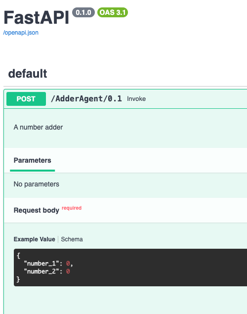
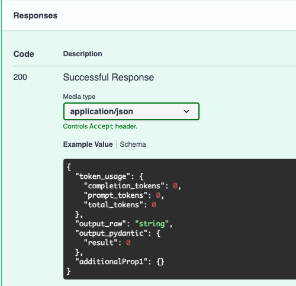

Working with custom input and output types
When building an agent, you must specify what types of input it should receive. This input can be either one of the standard types included with the SK Agents Framework or a type you define yourself.
Available Standard Types
- BaseInput - A base input type containing chat history for chat-like interactions
Bases: KernelBaseModel
The history of a chat interaction between an automated assistant and a human.
Source code in src/sk_agents/ska_types.py
You also have the option to specify a custom output type which will be used in REST calls as the output format for the response from the agent.
To define either a custom input or output type, simply create a new Python file
and create classes which inherit from KernelBaseModel in the
semantic_kernel.kernel_pydantic package. Once defined, you can specify the
types in your agent's configuration file.
REST Output
When invoking an agent using the REST endpoint, your output will always follow the below format:
{
"token_usage": {
"completion_tokens": 0,
"prompt_tokens": 0,
"total_tokens": 0
},
"extra_data": {},
"output_raw": "string",
"output_pydantic": "null or user-defined output type"
}
extra_data provides a mechanism by which plugins can return additional data
along with the output.
output_raw will contain the raw output from the agent, as a string.
If you have defined a custom output type, the output_pydantic field will
contain the output in the format of your defined class.
Note: It is likely that future versions of the Framework will do away with the redundant output fields and your output will be either the raw string (if no custom output type was defined) or the output in the format of your defined class.
Streaming Output
When invoking an agent using the streaming endpoint, the output will always be the raw text output as structured output would not make sense in the streaming context.
extra_data, if populated, will be sent as a final message after all other text
has been sent. The message will be in the format of:
Note: Currently, token usage metrics are not available via the streaming endpoint as it is not currently supported for any models by Semantic Kernel. There is planned support for this, however, so it will likely be included in a future version.
Number Adder Example
For example, if we wanted to create an agent which adds two numbers together, and returns the result, we could define input and output types which looked like the following:
# custom_types.py
from semantic_kernel.kernel_pydantic import KernelBaseModel
class NumbersInput(KernelBaseModel):
number_1: int
number_2: int
class AddOutput(KernelBaseModel):
result: int
In the agent's configuration file, we would specify the input and output types
by setting the input_type and output_type fields.
apiVersion: skagents/v1
kind: Sequential
description: >
A number adder
service_name: AdderAgent
version: 0.1
input_type: NumbersInput
output_type: AddOutput
spec:
agents:
- name: default
role: Default Agent
model: gpt-4o
system_prompt: >
You are a helpful assistant.
tasks:
- name: action_task
task_no: 1
description: Add two number
instructions: >
Add the following two numbers together
{{number_1}} {{number_2}}
agent: default
Finally, to let the Framework know where our custom types have been defined, we'll need to set an environment variable defining the location of our custom types file:
TA_API_KEY=<your-API-key>
TA_SERVICE_CONFIG=demos/02_input_output/config.yaml
TA_TYPES_MODULE=demos/02_input_output/custom_types.py
Now, when we run the agent with the above environment file:
We'll see that the request payload now matches our defined input type: 
Additionally, we'll see that the response payload contains a key called
output_pydantic which matches the format of our defined output class.
